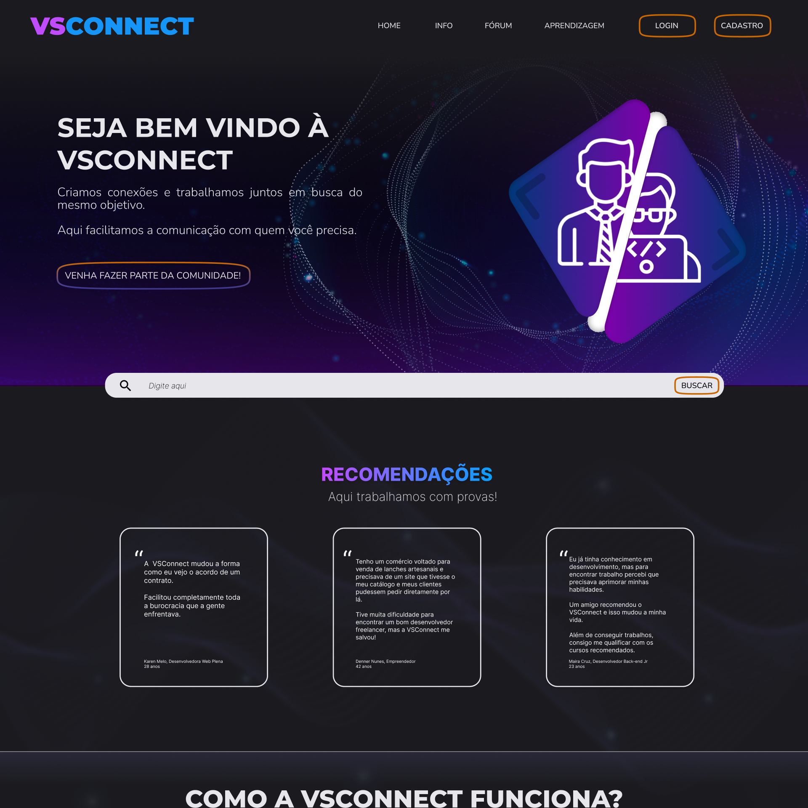
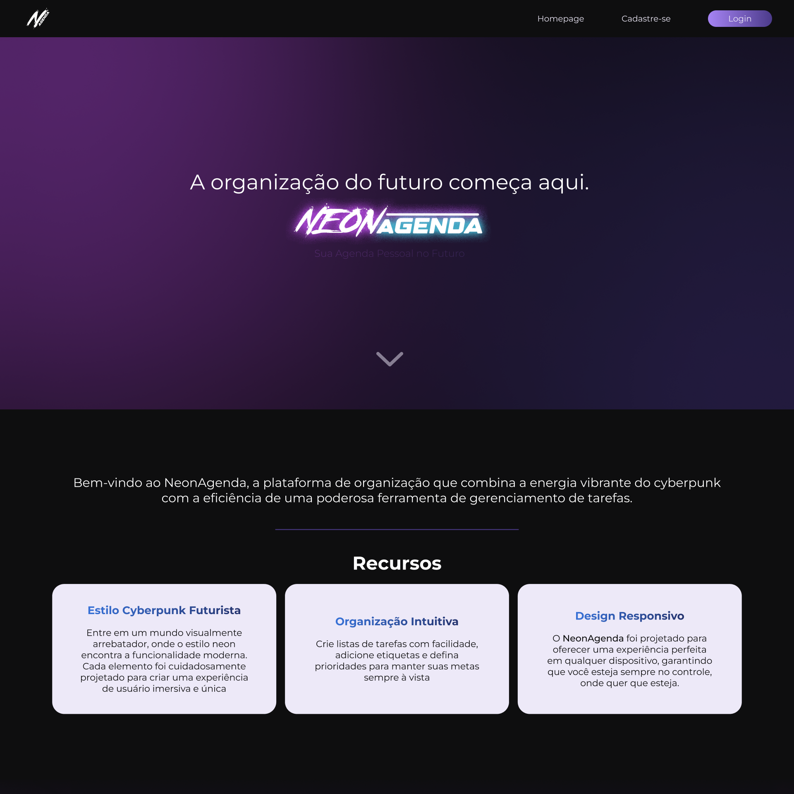
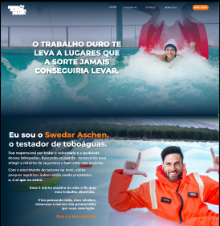

EU SOU A THAMIRES,
Desenvolvedora Front-end
cursando o 2º semestre de Análise e Desenvolvimento de Sistemas. Vamos conversar!

Me chamo Thamires Galdino Alves, tenho 22 anos.
Moro em Rio Grande da Serra, no ABC Paulista.
Tecnologia sempre foi a minha praia, começando pelos games.
Fiz dos games meu hobby e da tecnologia minha meta de carreira!
UM POUCO SOBRE MIM
Formada em Gestão da Tecnologia da Informação e no cursando o segundo semestre em Análise e Desenvolvimento de Sistemas.
Sou Dev Learning na RaiaDrogasil!
Busco sempre aprender mais sobre as novas tecnologias e tendências do mercado de T.I, para aplicar no meu dia a dia e contribuir para o meu sucesso.
Projetos
BotQuest VW
 Projeto de Estudo
Plataforma gamificada integrada a um chatbot empresarial
Projeto de Estudo
Plataforma gamificada integrada a um chatbot empresarial
VSConnect
 Projeto de Estudo Plataforma dedicada à fácil comunicação entre desenvolvedor e clienteNeonAgenda
 Projeto de Estudo Plataforma de gerenciamento de tarefas no estilo CyberpunkSnowSlideMan
 Projeto de Estudo Plataforma de registro de aventuras de um testador de toboágua no Alaska